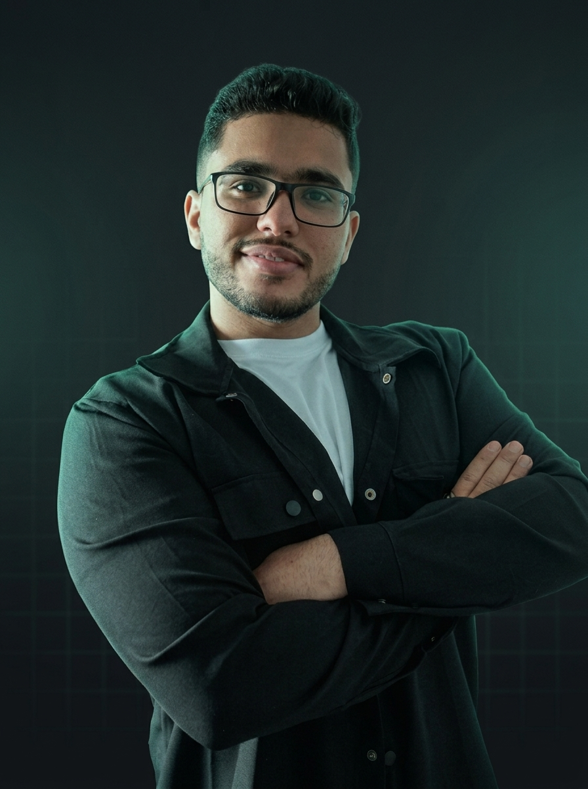

IT Support
Windows 7 / 10 / 11 · Kali Linux · Ubuntu · Debian
Installation & troubleshooting · Computer maintenance · Malware detection & removal · User and permission management
IT professional · Tozeur, Tunisia
IT Support Technician Junior Software Developer
IT graduate specializing in Networks and Computer Services, with practical experience in computer maintenance, technical support, networking, and software development. Passionate about technology, cybersecurity, and building practical software solutions.

IT Support · Systems & Networks · Junior Development
TN / 202501 — PROFILE
I’m an IT graduate from ISET Gafsa with a foundation in networks and computer services, and a hands-on approach to solving everyday technical problems.
My experience spans freelance computer maintenance, an IT support internship at Tunisie Telecom, and a final-year cybersecurity project. Alongside support and networking, I build small software tools that make technical concepts tangible.
Explore my experienceInformation Technology · Networks & Computer Services
Graduated in 2025
Individual final-year cybersecurity project
Computer support for individual customers since August 2025
02 — TOOLKIT
A practical toolkit built across support, networks, development and security.
Windows 7 / 10 / 11 · Kali Linux · Ubuntu · Debian
Installation & troubleshooting · Computer maintenance · Malware detection & removal · User and permission management
TCP/IP · IP addressing · Routers · Switches
Wi-Fi configuration · Network troubleshooting · Network traffic monitoring
Python · JavaScript · TypeScript · HTML · CSS
React · C · C++ · Java · SQL · MySQL
Vulnerability scanning · Network scanning · Traffic analysis · System monitoring · IDS/IPS concepts · Practical labs
Git · GitHub · VirtualBox · VMware · Linux terminal
Skills are listed without proficiency ratings or unverified certifications.
03 — SELECTED WORK
A browser-based, best-effort assessment tool that checks reachability, common security headers, HTTPS/HSTS, selected paths and subdomains. Results can be limited by browser CORS restrictions; it is not a deep port scanner.
View repositoryA standard-library Python CLI for scanning common or custom TCP port ranges and discovering active network hosts with a ping sweep. Intended for authorized networks.
View repositoryA React dashboard and Python/Scapy backend for packet capture and PCAP analysis, with protocol and host statistics, packet inspection, DNS/HTTP details, and heuristic suspicious-activity indicators. Live capture needs suitable permissions and capture support.
View repositoryA live terminal dashboard showing CPU, memory, disk and network I/O, with process information and refresh-interval controls.
View repositoryAn educational app with password-strength and entropy views, a deliberately limited lowercase-only brute-force simulation, and a SHA-256 wordlist demonstration. It is not a real-world attack tool.
View repositoryAn individual final-year project combining vulnerability scanning, network monitoring, IDS/IPS, security alerts and an AI chatbot.
Academic project · No public repository04 — EXPERIENCE
05 — EDUCATION & LEARNING
Specialization: Networks and Computer Services
Institut Supérieur des Études Technologiques de Gafsa (ISET Gafsa)
2022 — 202506 — LANGUAGES
07 — GET IN TOUCH
Open to opportunities in IT support, systems and networking, and junior software development.
Email Dhia